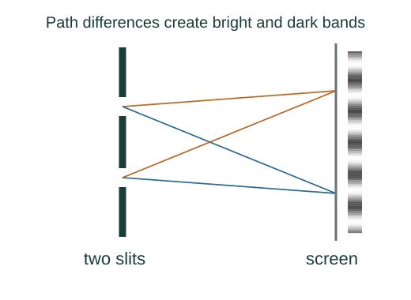
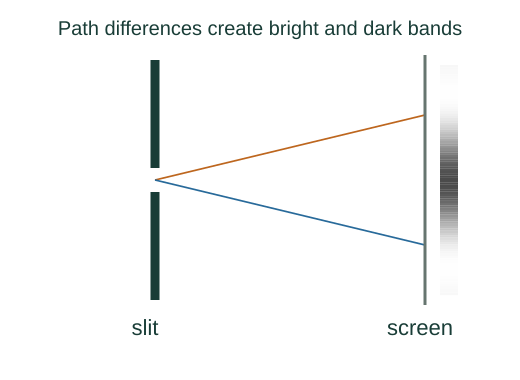

Derive the double-slit interference pattern
Interference depends on relative phase. The extra travel distance from two coherent slits creates a phase difference; adding their fields gives bright and dark directions.
What the symbols mean
d: slit separation; λ: wavelength in the propagation medium; I₁: intensity from either identical slit alone; m: integer order.
When this applies
Two coherent equal-amplitude narrow slits, common polarization, far-field observation, and negligible individual-slit diffraction variation for the displayed interference-only intensity.

Find the path difference
Far from the slit pair, rays toward one observation angle are approximately parallel. The projection of the slit separation onto that direction gives the extra path.
Convert distance to phase
Each wavelength corresponds to a phase advance of 2π. Therefore a path difference Δℓ produces phase difference δ = 2πΔℓ/λ.
Add wave amplitudes before squaring
The sum of two equal sinusoidal fields has amplitude 2E₁ cos(δ/2). Intensity is proportional to the squared amplitude.
Identify maxima and screen spacing
Bright fringes require δ = 2πm. For a distant screen at distance D and small angles, y ≈ Dθ and sin θ ≈ θ.

Where each equation comes from
Derived equations link to an argument below. Definitions, physical postulates and constitutive models are identified as the inputs of that argument.
Derivation of the main resultDerived result
Conditions: Two coherent equal-amplitude narrow slits, common polarization, far-field observation, and negligible individual-slit diffraction variation for the displayed interference-only intensity.
- Find the path difference. Far from the slit pair, rays toward one observation angle are approximately parallel. The projection of the slit separation onto that direction gives the extra path. Explain the equation used in step 1 ↗
- Convert distance to phase. Each wavelength corresponds to a phase advance of 2π. Therefore a path difference Δℓ produces phase difference δ = 2πΔℓ/λ. Explain the equation used in step 2 ↗
- Add wave amplitudes before squaring. The sum of two equal sinusoidal fields has amplitude 2E₁ cos(δ/2). Intensity is proportional to the squared amplitude. Explain the equation used in step 3 ↗
- Identify maxima and screen spacing. Bright fringes require δ = 2πm. For a distant screen at distance D and small angles, y ≈ Dθ and sin θ ≈ θ. Explain the equation used in step 4 ↗ What happens when the slit width cannot be neglected? ↗
Equation in step 1Derived result
What is being shown: Find the path difference
Far from the slit pair, rays toward one observation angle are approximately parallel. The projection of the slit separation onto that direction gives the extra path.
Starting conditions and inputs: Two coherent equal-amplitude narrow slits, common polarization, far-field observation, and negligible individual-slit diffraction variation for the displayed interference-only intensity.
Equation in step 2Derived result
What is being shown: Convert distance to phase
Each wavelength corresponds to a phase advance of 2π. Therefore a path difference Δℓ produces phase difference δ = 2πΔℓ/λ.
Earlier results used in this argument:
- Δℓ = d sin θ (Derived result)
Equation in step 3Derived result
What is being shown: Add wave amplitudes before squaring
The sum of two equal sinusoidal fields has amplitude 2E₁ cos(δ/2). Intensity is proportional to the squared amplitude.
Earlier results used in this argument:
- Δℓ = d sin θ (Derived result)
- δ = 2πd sin θ/λ (Derived result)
Equation in step 4Derived result
What is being shown: Identify maxima and screen spacing
Bright fringes require δ = 2πm. For a distant screen at distance D and small angles, y ≈ Dθ and sin θ ≈ θ.
Earlier results used in this argument:
- Δℓ = d sin θ (Derived result)
- δ = 2πd sin θ/λ (Derived result)
- I = 4I₁ cos²(δ/2) (Derived result)
A worked example
For λ = 500 nm, D = 2.0 m, and d = 0.50 mm, adjacent small-angle bright fringes are separated by 2.0 mm.
Derivation behind this calculation ↗A point to keep straight
Add electric fields, not intensities, for coherent light. Mutually incoherent sources average away the interference cross term.
Check the assumptions and derivation ↗